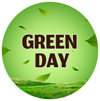

IRRIGAÇÃO INTELIGENTE
Controle da quantidade de água utilizada na plantação com precisão e economia.
SAIBA MAIS
Login
Soluções inteligentes para uma agricultura
mais sustentável, produtiva e eficiente.
Monitoramento climático, irrigação inteligente
e muito mais para impulsionar o seu cultivo.


Controle da quantidade de água utilizada na plantação com precisão e economia.
SAIBA MAISAcompanhe temperatura, umidade, chuvas e outras condições em tempo real para melhores decisões.
SAIBA MAISFerramentas modernas para melhorar a produtividade, reduzir custos e aumentar seus resultados.
SAIBA MAIS
Produzir mais, desperdiçar menos e cuidar
do nosso planeta.
Esse é o nosso compromisso com os
produtores agrícolas.


Dicas práticas para uma irrigação mais eficiente.

Conheça as novidades para melhorar sua produção.

Entenda como dados precisos ajudam na produtividade.
Dados climáticos
atualizados
Nova recomendação
de irrigação
Alerta de chuva
emitido
A umidade está adequada, porém há 75% de chance de chuva nas próximas horas.
Recomenda-se adiar a irrigação.Próximas horas